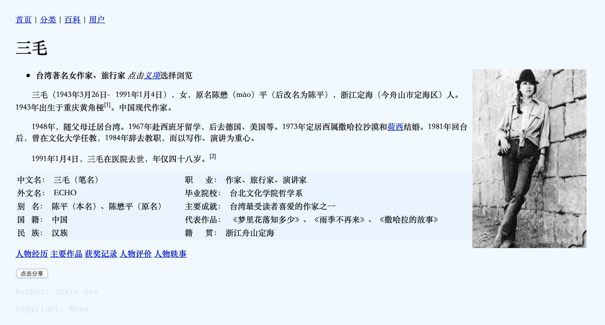

作业1: 人物介绍¶
作业要求：不使用 CSS 写 HTML 人物介绍
作业截图： 
反思：
- 行内CSS也算使用了CSS
- 共使用了四处：
- body 设置宽度 80%
- 文本内容首行缩进
- 图片 float：right
- footer设置字体，颜色
作业代码：
<!DOCTYPE html>
<html lang="zh-CN">
<head>
<meta http-equiv="Content-Type" content="text/html; charset=utf-8" />
<meta name="author" content="Ariel Gao">
<meta name="Description" content="作家三毛个人简介">
<meta charset="UTF-8">
<title>三毛</title>
</head>
<nav>
<a href=#>首页</a> |
<a href=#>分类</a> |
<a href=#>百科</a> |
<a href=#>用户</a>
</nav>
<body align="left" topmargin=5% leftmargin=5% bgcolor=#F0F8FF style="width:90%;">
<h1>三毛</h1>
<img src="img/1.jpg" style="float: right;" width=20% rightmarigin="100px">
<ul>
<li><b>台湾著名女作家、旅行家</b> <i>点击<a href=https://baike.baidu.com/item/三毛?force=1 target=" blank ">义项</a></i>选择浏览</li>
</ul>
<p style="text-indent:2em;"></p>
<div>
<p style="text-indent:2em;">三毛（1943年3月26日－1991年1月4日），女，原名陈懋（mào）平（后改名为陈平），浙江定海（今舟山市定海区）人。1943年出生于重庆黄角桠<sup>[1]</sup>。中现代作家。</p>
<p style="text-indent:2em;">1948年，随父母迁居台湾。1967年赴西班牙留学，后去德国、美国等。1973年定居西属撒哈拉沙漠和<a href=https://baike.baidu.com/item/荷西·马利安·葛罗/7840266?fromtitle=荷西&fromid=5302449 target="blank">荷西</a>结婚。1981年回台后，曾在文化大学任教，1984年辞去教职，而以写作、演讲为重心。</p>
<p style="text-indent:2em;">1991年1月4日，三毛在医院去世，年仅四十八岁。<sup>[2]</sup></p>
</div>
<table border="0" width=80% bgcolor=#e5f3ff>
<tr>
<td>中文名： 三毛（笔名）</td>
<td>职 业： 作家、旅行家、演讲家</td>
</tr>
<tr>
<td>外文名： ECHO</td>
<td>毕业院校： 台北文化学院哲学系</td>
</tr>
<tr>
<td>别 名： 陈平（本名）、陈懋平（原名）</td>
<td>主要成就： 台湾最受读者喜爱的作家之一 </td>
</tr>
<tr>
<td>国 籍： 中国</td>
<td>代表作品： 《梦里花落知多少》、《雨季不再来》、《撒哈拉的故事》 </td>
</tr>
<tr>
<td>民 族： 汉族</td>
<td>籍 贯： 浙江舟山定海 </td>
</tr>
</table>
<p></p>
<span><strong><a href=#>人物经历</a></strong></span>
<span><strong><a href=#>主要作品</a></strong></span>
<span><strong><a href=#>获奖记录</a></strong></span>
<span><strong><a href=#>人物评价</a></strong></span>
<span><strong><a href=#>人物轶事</a></strong></span>
<p></p>
<button type="button" autofocus>点击分享</button>
</body>
<footer style="font-family: 'Courier New', Courier, monospacel; color:gainsboro">
<p>Author: Yuxin Gao</p>
<p><time pubdate datetime="2019-03-05"></time></p>
<p>Copyright: None</p>
</footer>
</html>